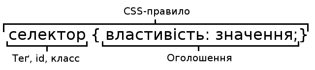

CSS (англ. Cascading Style Sheets, укр. Каскадні таблиці стилів) — спеціальна мова, що використовується для опису зовнішнього вигляду сторінок, написаних мовами розмітки даних.
Найчастіше CSS використовують для візуальної презентації сторінок, написаних HTML та XHTML, але формат CSS може застосовуватися до інших видів XML-документів.
Специфікації CSS були створені та розвиваються Консорціумом Всесвітньої павутини.
CSS має різні рівні та профілі. Наступний рівень CSS створюється на основі попередніх, додаючи нову функціональність або розширюючи вже наявні функції. Рівні позначаються як CSS1, CSS2 та CSS3. Профілі — сукупність правил CSS одного або більше рівнів, створені для окремих типів пристроїв або інтерфейсів.
Наприклад, існують профілі CSS для принтерів, мобільних пристроїв тощо.
CSS (каскадна або блочна верстка) прийшла на заміну табличній верстці веб-сторінок. Головна перевага блочної верстки — розділення змісту сторінки (даних) та їхньої візуальної презентації.